S
1

90
Point Luna
A
13

88
CrediCor

88
Manutech
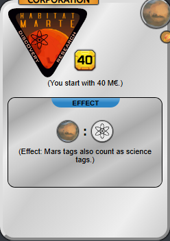
88
HabitatMarte
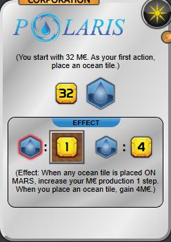
86
Polaris

85
EcoLine

85
Vitor
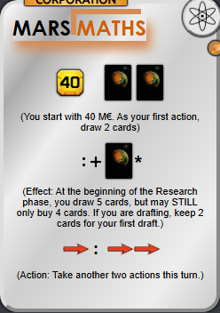
85
MarsMaths

83
Tharsis Republic

82
Lakefront Resorts

82
Poseidon
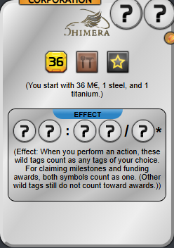
82
Chimera

80
Philares
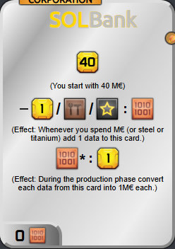
80
SolBank
B
15

78
Teractor
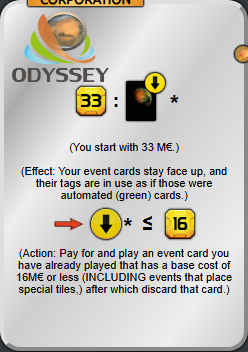
78
Odyssey
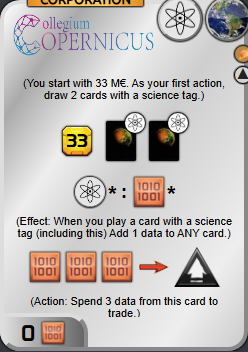
76
CollegiumCopernicus

75
Helion

75
Valley Trust
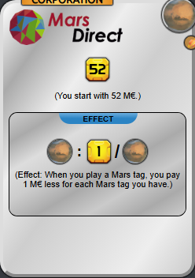
75
MarsDirect

74
Interplanetary Cinematics
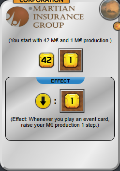
74
MartianInsuranceGroup

73
Spire

72
Cheung Shing MARS

72
PolderTECH Dutch
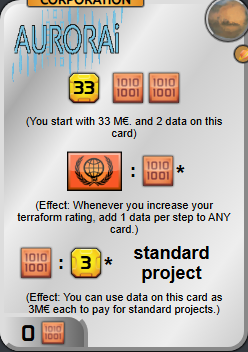
72
Aurorai
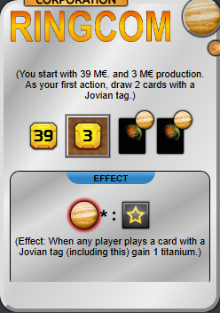
72
Ringcom

70
Morning Star Inc.
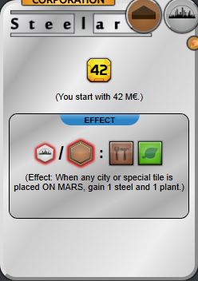
70
Steelaris
C
25

68
Tycho Magnetics
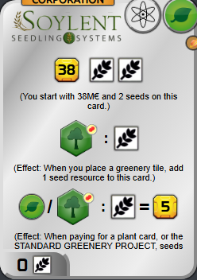
68
SoylentSeedlingSystems

67
Nirgal Enterprises

66
Septem Tribus

65
Saturn Systems

64
EcoTec

64
Robinson Industries

63
Inventrix

63
Mons Insurance

63
Sagitta Frontier Services
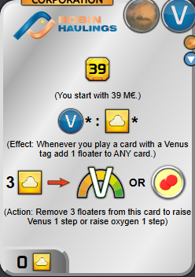
63
RobinHaulings

62
Arklight

62
Viron
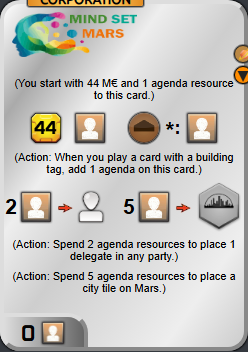
62
MindSetMars

61
Aridor

60
Mining Guild

60
PhoboLog

60
Pristar
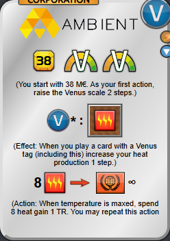
60
Ambient

58
Factorum

58
Palladin Shipping
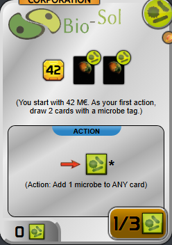
58
BioSol

56
Thorgate

55
Utopia Invest

55
AdhaiHighOrbitConstructions
D
13

54
Arcadian Communities

54
Stormcraft Incorporated

52
Celestic

52
Pharmacy Union
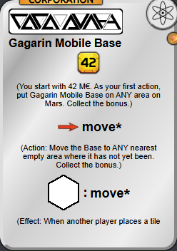
52
GagarinMobileBase

50
Aphrodite

48
Kuiper Cooperative

48
Recyclon

45
Astrodrill

44
Splice

42
United Nations Mars Initiative

40
Polyphemos

38
Terralabs Research
F
1

25
Beginner Corporation